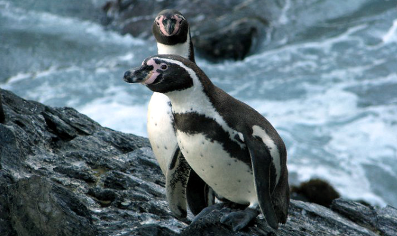
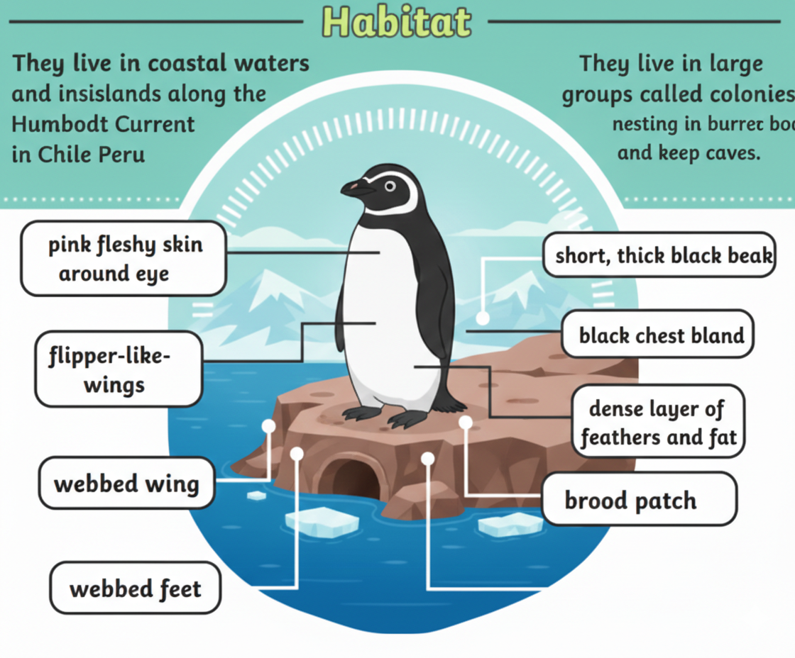
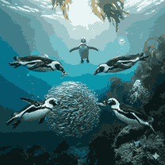

The Coastal Penguins of South America

Humboldt penguins are named after the cold Humboldt Current that flows along the west coast of South America. They are medium-sized penguins known for the black band across their chest.

Humboldt penguins live mainly along the coasts of Peru and Chile. They prefer rocky shores and islands where they dig burrows or nest in caves for protection.

Their diet mainly includes small fish such as anchovies and sardines. They are strong swimmers and skilled divers when hunting for food.